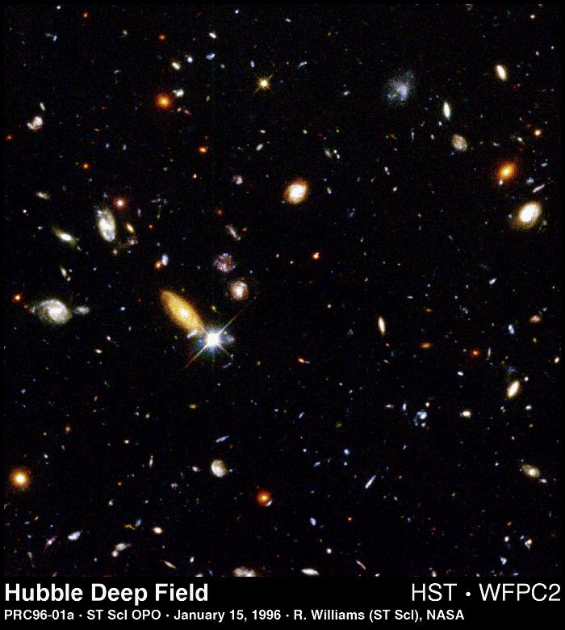
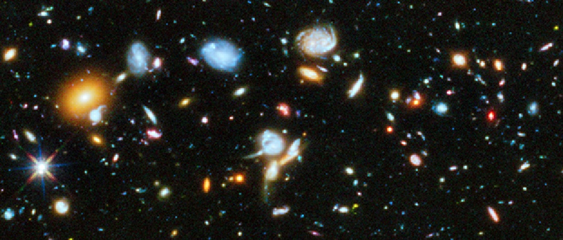

ASTR 1210/1230 (O'Connell) Lecture Notes
THE HUBBLE DEEP FIELDS

Hubble Deep Field, Color Mosaic
THE HUBBLE DEEP FIELD (1996)
Several hundred never before seen galaxies are visible in this
"deepest-ever" view of the universe, called the Hubble Deep Field
(HDF), made with NASA's Hubble Space Telescope. Besides the classical
spiral and elliptical shaped galaxies, there is a bewildering variety
of other galaxy shapes and colors that are important clues to
understanding the evolution of the universe. Some of the galaxies may
have formed less that one billion years after the Big Bang.
Representing a narrow "keyhole" view all the way to the visible
horizon of the universe, the HDF image covers a speck of sky 1/30th the
diameter of the full Moon (about 25% of the entire HDF is shown here).
This is so narrow, just a few foreground stars in our Milky Way galaxy
are visible and are vastly outnumbered by the menagerie of far more
distant galaxies, some nearly as faint as 30th magnitude, or nearly
four billion times fainter than the limits of human vision. (The
relatively bright object with diffraction spikes just left of center
may be a 20th magnitude star.) Though the field is a very small sample
of sky area it is considered representative of the typical distribution
of galaxies in space because the universe, statistically, looks the
same in all directions.
The image was assembled from many separate exposures (342 frames total
were taken, 276 have been fully processed to date and used for this
picture) with the Wide Field and Planetary Camera 2 (WFPC2), for ten
consecutive days between December 18 to 28, 1995. This picture is from
one of three wide-field CCD (Charged Coupled Device) detectors on the
WFPC2.
This "true-color" view was assembled from separate images were taken in
blue, red, and infrared light. By combining these separate images into
a single color picture, astronomers will be able to infer -- at least
statistically -- the distance, age, and composition of galaxies in the
field. Bluer objects contain young stars and/or are relatively close,
while redder objects contain older stellar populations and/or farther
away.
This material was presented to the 187th meeting of the American
Astronomical Society in San Antonio, Texas on January 15, 1996.
Credit: Robert Williams and the Hubble Deep Field Team (STScI) and NASA
BACKGROUND ON THE HDF PROJECT
A key scientific justification for building Hubble Space Telescope was
to use it to measure the size and age of the universe, test theories
about its origin in the Big Bang, an the emergence of large-scale
structure as embodied in vast filaments of galaxies. We live within a
universe that is expanding and evolving. Images of distant galaxies
offer "fossil" clues to what the universe looked like when it was only
a small fraction of its present age. Understanding galaxy evolution is
a prerequisite to addressing even more fundamental questions about the
expansion of space and ultimate fate of the universe.
The Hubble Deep Field project was inspired by some of the first deep
images to return from the telescope after the 1993 HST servicing
mission. These images showed that the early universe contained
galaxies in a bewildering variety of shapes and also sizes. Some had
the familiar elliptical and spiral shapes seen among normal galaxies,
but there were many peculiar shapes not commonly seen in the local
universe. Such images of the early universe are likely to be one of
the enduring legacies of the Hubble Space Telescope. Few astronomers
had expected to see this activity presented in such amazing detail.
THE DECISION
Impressed by the results of earlier observations such as the Hubble
Medium Deep Survey, a special advisory committee convened by Robert
Williams, Director of the Space Telescope Science Institute (STScI),
recommended that he use a significant fraction of his annual director's
discretionary time to take the deepest picture of the universe, by
aiming Hubble for 150 consecutive orbits on a single piece of sky. The
research is being done as a service to the entire astronomical
community. Images from the Hubble Deep Field project will be made
available to the astronomers around the world shortly after completion
of the observation.
THE SCIENTIFIC CONTEXT
Like climbing the tallest mountain, taking the deepest image has been
the goal for every telescope that has pushed the frontiers of light
gathering power, resolution, or spectral range. When the great 200-inch
Hale telescope on Mount Palomar came into operation 50 years ago,
astronomers hoped to use such observations to provide direct
observational evidence for verifying or disproving the prevailing view
that the universe is expanding and that space is "curved" by gravity,
as predicted by Einstein's theory of general relativity. Just as
Earth's curvature can be proven by carefully measuring lengths and
angles on its surface, it should be possible to verify that the
universe is curved by careful measurement of the brightness and sizes
of galaxies. For example, if galaxies were all of the same size, and
were distributed uniformly through space, then it would be possible to
measure the curvature of space simply by measuring the apparent sizes
and comparing the number of big, nearby galaxies to the number of
smaller, distant ones.
By the early 1960's, such measurements appeared to be well within reach
of ground-based telescopes. However, it became apparent that these
tests are not as straightforward as envisioned. Because the light that
reaches us now from distant galaxies left billions of years ago, we are
viewing them at a time when they were younger. To carry out
geometrical tests for the curvature of the universe, it is essential to
correct for the changing appearance of galaxies as they grow old. A
central problem is that the simplest ideas for galaxy evolution are
based on observations of nearby galaxies, their apparent sizes, and
their distribution in space. This means that a view of young galaxies
is missing from fundamental models of galaxy evolution, or from the
current picture of the universe itself.
Observations in the 70's and 80's showed the universe is not as simple
as first presumed. Galaxies are not randomly distributed on the sky,
but form great clusters, walls, and sheets. This made astronomers and
physicists realize that seeing how large-scale structures formed and
developed provides a key to the universe's origin.
The universe's large-scale structure may be the imprint of much
smaller- scale, or quantum, processes that acted shortly after the Big
Bang, when the universe was just a soup of subatomic particles. Much
later in the universe's history, structure was primarily governed by
gravity. In this view, the gravitational attraction was largely
between clouds of "dark matter" -- subatomic particles that make up
most of the mass of the universe. The galaxies formed at the densest
concentrations of dark matter, like froth on the crests of waves in the
ocean.
The basic picture is that the universe formed in the Big Bang and that
structure grew from primordial quantum fluctuations. However,
astrophysicists have many theoretical variations on this theme. For
example, different forms of dark matter predict a different character
of the waves and ripples of the early universe. Other theories do not
involve the Big Bang or quantum fluctuations.
To be considered successful, cosmological theories must explain the
distribution of sizes, shapes, colors and locations of galaxies in both
the nearby universe and at large distances. The Hubble Deep Field and
other Hubble observations will allow astronomers to compile accurate
catalogs of the sizes, shapes, colors and distances of very faint
galaxies. With these observations, astronomers aim to provide a solid
testing ground for competing "world models."
THE HUBBLE DEEP FIELD WILL PROBE KEY ASTRONOMICAL QUESTIONS
How Many Galaxies Are There In The Universe?
The Hubble Deep Field will be used to count galaxies ten times as faint
as the deepest existing ground-based observations and nearly twice as
faint as the deepest existing Hubble images. Beyond the limits of
detection of individual galaxies, astronomers will study the background
level in the images to try to deduce how much extra light there is in
unseen galaxies. By observing through four different color filters,
the Hubble Deep Field provides a unique way to distinguish very distant
galaxies from nearby galaxies. Hydrogen both within the distant
galaxies, and in intergalactic space, absorbs some of the ultraviolet
light from the very distant galaxies. The cumulative effect of the
absorption is to make these galaxies essentially vanish in the
ultraviolet. This technique of looking for "ultraviolet dropout"
galaxies has been successfully used with ground-based telescopes over
the last several months, but will be a new experiment for Hubble
because it requires a larger investment of observing time than is
normally allocated to an individual observer.
How Did Large-Scale Structure Evolve In The Universe?
The Hubble Deep Field will be used to perform a statistical study of
the distribution of galaxies on the sky. This is an essential test of
models for the structure of the universe and galaxy formation theories.
Predicting how clustering should vary with brightness (or other galaxy
properties) is a key challenge to models of structure formation.
Current observations show that galaxies tend to cluster around other
galaxies. However, the faintest galaxies are almost randomly
distributed on the sky. The Hubble Deep Field will push such studies
to fainter limits.
How Were Galaxies Assembled?
Detailed studies of the ages and chemical compositions of stars in our
own galaxy suggest that it has led a relatively quiet existence,
forming stars at a rate of a few suns a year for the last 10 billion
years. Other spiral galaxies seem to have similar histories. If this
is typical evolution for spiral galaxies, then predictions can be made
for what they should have looked like at half their present age --
including their size, color and abundance. This information, combined
with actual distances derived from ground-based spectroscopic
observations, will provide a new test for theories of spiral galaxies.
The other major class of galaxies seen in the nearby universe is the
elliptical, football-shaped aggregates of stars that appear to be very
old and stopped forming stars long ago. There is currently much debate
about when such galaxies formed and whether they formed through
collisions of other types of galaxies or through collapse of a pristine
cloud of primordial gas in the very early universe. The Hubble Deep
Field, along with other deep Hubble images, provides a snapshot through
time, which can be used to search for distant elliptical galaxies, or
primeval galaxies that might later evolve into elliptical galaxies.
Is The Universe Open Or Closed?
An open universe expands forever because it does not contain enough
matter (also called mass density). Space is said to be negatively
curved, as first described by Einstein in his law of general
relativity. A closed universe eventually stops expanding and then
contracts, to ultimately collapse into a black hole. In such a
universe space is described as positively curved -- the universe folds
back in on itself and space is unbounded but finite. The distribution
of galaxies in the Hubble Deep Field images may yield clues to the
curvature of space. The Hubble Deep Field results will be compared to
models that predict how the universe should look if it is open or
closed. If certain classes of galaxies can be identified where
uncertainties in evolution are small, then the sizes, brightnesses and
numbers of faint examples of these galaxies can be compared to the
local properties to estimate the cosmological curvature.

THE HUBBLE ULTRA DEEP FIELD (2004-2014)
After the installation of new HST instruments, the Advanced Camera for
Surveys and later the Wide Field Camera 3, it was decided to make
yet deeper exposures of the distant universe, similar in concept to the
HDF and called the Hubble Ultra Deep Field. First images of the HUDF were
released in
2004. Exposures have continued at intervals, and the
current
exposure time amounts to over 600 hours (25 days) and span the
spectral region from the near-ultraviolet to the near-infrared. The
HUDF images contain the most distant and faintest galaxies known.
Click on the image to see the full HUDF field.
You can download various versions of the HUDF images from the Hubble
Space Telescope website (link below).
Last modified
December 2020 by rwo
Images and text released by the Space Telescope
Science Institute. These notes are intended for the private,
noncommercial use of students enrolled in Astronomy 1210 at the
University of Virginia.
{kind=link}
{kind=link}